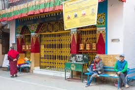
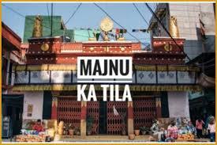
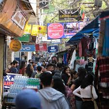

MAJNU KA TILA



ABHOUT MAJNU KA TILA
Majnu Ka Tila, often referred to as “Little Tibet,” is a Tibetan settlement located in North Delhi, India. It was established in the 1960s to accommodate Tibetan refugees fleeing from Tibet after the Chinese invasion. Over the years, Majnu Ka Tila has developed into a vibrant Tibetan colony, known for its rich Tibetan culture, religious significance, delicious food, and handicrafts.
The History Behind Majnu Ka Tila
The name “Majnu Ka Tila” translates to “Majnu’s Hill.” It is believed to have been named after a Sufi mystic named Majnu, who is said to have meditated here. Majnu Ka Tila became a haven for Tibetan refugees after the 1959 Tibetan Uprising and the Dalai Lama's exile to India. The colony holds great historical significance as it has preserved Tibetan culture, religion, and traditions for generations. Today, it is home to a large Tibetan community and houses Buddhist monasteries, schools, and cultural centers.
Top Activities and Attractions
-
Explore Tibetan Monasteries: Visit the Tibetan Buddhist temples, such as the Tibetan Buddhist Temple, for a peaceful spiritual experience.
-
Sample Tibetan Food: Don’t miss trying traditional Tibetan dishes like Momos (dumplings), Thukpa (noodle soup), and Sha Phaley (fried meat pie).
-
Shopping for Handicrafts: The market area of Majnu Ka Tila is perfect for shopping for Tibetan handicrafts, including prayer flags, traditional clothing, rugs, and Buddhist relics.
-
Cultural Festivals: Depending on the time of your visit, you may get a chance to witness Tibetan festivals like Losar and Saga Dawa (celebrating Buddha’s birth, enlightenment, and death).
Where to Stay in Majnu Ka Tila
There are several budget guesthouses and hotels around Majnu Ka Tila that cater to travelers. Some of the popular ones include:
-
Tibetan Guest House: A simple yet cozy stay with an authentic Tibetan vibe.
-
Hotel Ama’s: Located near the colony, offering affordable rooms and basic amenities.
-
The Imperial Hotel: A more luxurious option located nearby, offering premium services.
For more information please fill the form given below:
contact us at: har.sharma.it09@gmail.com